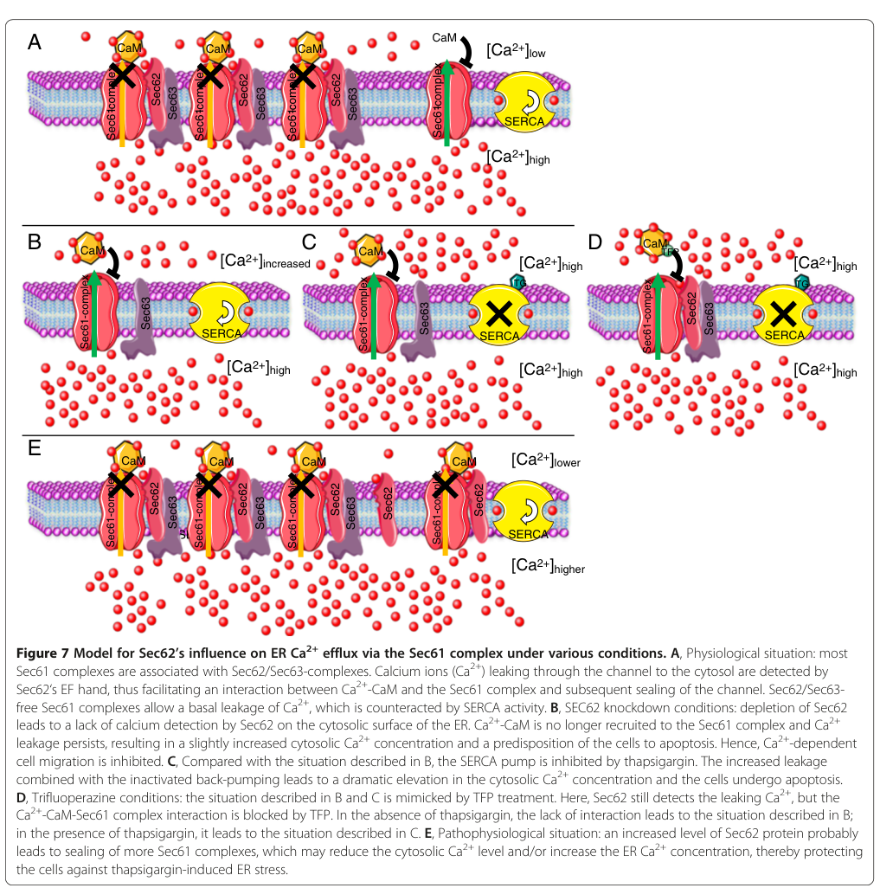

SEC62 (also TLOC1, translocation protein 1) is a multi-pass endoplasmic reticulum membrane protein and an auxiliary component of the Sec61 translocon. Together with SEC63 it forms the SEC62-SEC63 complex that promotes translocation of precursor polypeptides into the ER, with a particular role in the post-translational import of small presecretory proteins bearing short, weakly hydrophobic signal peptides. SEC62 acts as a membrane targeting receptor that positions newly synthesized precursors into the Sec61 channel and helps trigger channel opening for translocation into the ER lumen. SEC62 has two transmembrane helices with N- and C-terminal cytoplasmic domains and interacts with the translocon core (e.g. SEC61B). In addition to its translocation role, SEC62 functions as a receptor in recovery-phase ER-phagy (reticulophagy), interacting with autophagy LC3/GABARAP-family proteins to mediate selective degradation of ER following stress. SEC62 is broadly expressed and is amplified in several cancers.
| GO Term | Evidence | Action | Reason |
|---|---|---|---|
|
GO:0005789
endoplasmic reticulum membrane
|
IBA
GO_REF:0000033 |
ACCEPT |
Summary: SEC62 is an integral ER membrane protein that acts at the ER membrane as a translocon-associated factor. ER membrane is its core site of action, conserved across the SEC62 family.
Reason: Core cellular component; SEC62 functions at the ER membrane in association with the Sec61 translocon.
Supporting Evidence:
file:human/SEC62/SEC62-uniprot.txt
SUBCELLULAR LOCATION: Endoplasmic reticulum membrane
|
|
GO:0008320
transmembrane protein transporter activity
|
IBA
GO_REF:0000033 |
ACCEPT |
Summary: As part of the translocon machinery, SEC62 contributes to transmembrane transport of precursor polypeptides into the ER, positioning them into the Sec61 channel. This molecular function is conserved across the family.
Reason: Core molecular function in the context of the translocon; SEC62 helps move precursor polypeptides across the ER membrane.
Supporting Evidence:
file:human/SEC62/SEC62-uniprot.txt
Targets and properly positions newly synthesized presecretory proteins into the SEC61 channel-forming translocon complex, triggering channel opening for polypeptide translocation to the ER lumen.
|
|
GO:0031204
post-translational protein targeting to membrane, translocation
|
IBA
GO_REF:0000033 |
ACCEPT |
Summary: SEC62 mediates post-translational transport of precursor polypeptides across the ER membrane; this is its defining biological process, conserved across the family.
Reason: Core biological process; SEC62 is a translocation/post-translational targeting factor of the ER translocon.
Supporting Evidence:
file:human/SEC62/SEC62-uniprot.txt
Mediates post-translational transport of precursor polypeptides across endoplasmic reticulum (ER).
|
|
GO:0005789
endoplasmic reticulum membrane
|
IEA
GO_REF:0000120 |
ACCEPT |
Summary: Electronic assignment of ER membrane localization from the UniProt subcellular location, consistent with the multi-pass ER membrane topology.
Reason: Correct core localization; redundant with IBA/IDA ER membrane evidence.
Supporting Evidence:
file:human/SEC62/SEC62-uniprot.txt
SUBCELLULAR LOCATION: Endoplasmic reticulum membrane
|
|
GO:0015031
protein transport
|
IEA
GO_REF:0000002 |
ACCEPT |
Summary: SEC62 mediates protein transport into the ER; protein transport is a correct but generic parent of the specific post-translational translocation process.
Reason: Correct general biological process; the specific GO:0031204 better captures SEC62's translocation role.
Supporting Evidence:
file:human/SEC62/SEC62-uniprot.txt
Mediates post-translational transport of precursor polypeptides across endoplasmic reticulum (ER).
|
|
GO:0005515
protein binding
|
IPI
PMID:33961781 Dual proteome-scale networks reveal cell-specific remodeling... |
KEEP AS NON CORE |
Summary: BioPlex proteome-scale interactome capture; bare protein binding is uninformative for core function.
Reason: High-throughput interactome interaction; uninformative bare term not elevated to core per guidelines.
Supporting Evidence:
file:human/SEC62/SEC62-uniprot.txt
Q99442; O95166: GABARAP
|
|
GO:0005515
protein binding
|
IPI
PMID:37219487 Large-scale phosphomimetic screening identifies phospho-modu... |
KEEP AS NON CORE |
Summary: Phosphomimetic motif-based interaction screen; bare protein binding is uninformative.
Reason: High-throughput interaction screen; uninformative bare term not elevated to core.
Supporting Evidence:
file:human/SEC62/SEC62-uniprot.txt
Q99442; O95166: GABARAP
|
|
GO:0005789
endoplasmic reticulum membrane
|
IDA
PMID:22375059 Different effects of Sec61α, Sec62 and Sec63 depletion on tr... |
ACCEPT |
Summary: Direct functional study (Sec61/Sec62/Sec63 depletion) places SEC62 active at the ER membrane in ER protein transport.
Reason: Core site of action with direct experimental support.
Supporting Evidence:
file:human/SEC62/SEC62-uniprot.txt
SUBCELLULAR LOCATION: Endoplasmic reticulum membrane
|
|
GO:0061709
reticulophagy
|
IMP
PMID:31006538 Intrinsically Disordered Protein TEX264 Mediates ER-phagy. |
KEEP AS NON CORE |
Summary: SEC62 acts in recovery-phase ER-phagy (reticulophagy), consistent with its interaction with the autophagy protein GABARAP. This is a genuine but secondary role distinct from its core translocon function.
Reason: Real ER-phagy role supported by GABARAP interaction, but distinct from and secondary to the core translocon/translocation function.
Supporting Evidence:
file:human/SEC62/SEC62-uniprot.txt
Q99442; O95166: GABARAP
|
|
GO:0031204
post-translational protein targeting to membrane, translocation
|
IMP
PMID:29719251 Chaperone-Mediated Sec61 Channel Gating during ER Import of ... |
ACCEPT |
Summary: SEC62 is a membrane-targeting component for small presecretory proteins during their import into the ER; this study demonstrates its role in chaperone-mediated Sec61 channel gating.
Reason: Core biological process with direct experimental (IMP) support; SEC62 targets/translocates small presecretory precursors.
Supporting Evidence:
PMID:29719251
Sec62 have all been characterized as membrane-targeting components for small presecretory proteins
|
|
GO:0006620
post-translational protein targeting to endoplasmic reticulum membrane
|
IMP
PMID:22375059 Different effects of Sec61α, Sec62 and Sec63 depletion on tr... |
ACCEPT |
Summary: SEC62 mediates post-translational targeting of precursors to the ER membrane; supported by depletion studies of ER transport components.
Reason: Core biological process; specific post-translational ER targeting role with experimental (IMP) support.
Supporting Evidence:
file:human/SEC62/SEC62-uniprot.txt
Proposed to act as a targeting receptor for small presecretory proteins containing short and apolar signal peptides.
|
|
GO:0016020
membrane
|
IDA
PMID:22375059 Different effects of Sec61α, Sec62 and Sec63 depletion on tr... |
KEEP AS NON CORE |
Summary: SEC62 is a membrane protein; "membrane" is a correct but generic parent of the specific ER membrane localization.
Reason: Correct but generic; ER membrane (GO:0005789) is the more specific and informative localization.
Supporting Evidence:
file:human/SEC62/SEC62-uniprot.txt
Multi-pass membrane protein
|
|
GO:0005791
rough endoplasmic reticulum
|
ISS
GO_REF:0000024 |
ACCEPT |
Summary: SEC62 localizes to the rough ER, consistent with its role at the translocon where translating/translocating ribosomes engage the membrane.
Reason: Correct and more specific ER subcompartment localization, consistent with translocon association.
Supporting Evidence:
file:human/SEC62/SEC62-uniprot.txt
SUBCELLULAR LOCATION: Endoplasmic reticulum membrane
|
|
GO:0038023
signaling receptor activity
|
TAS
PMID:9020021 Identification of a human cDNA homologue to the Drosophila t... |
MARK AS OVER ANNOTATED |
Summary: SEC62 is a translocon-associated targeting receptor for presecretory proteins, not a signal-transduction (signaling) receptor. The "signaling receptor activity" term mischaracterizes its receptor role; this is a legacy ProtInc annotation.
Reason: SEC62 functions as a precursor-targeting receptor at the translocon, not a signal-transduction receptor; signaling receptor activity over-extends/misframes its molecular function.
Supporting Evidence:
file:human/SEC62/SEC62-uniprot.txt
Proposed to act as a targeting receptor for small presecretory proteins containing short and apolar signal peptides.
|
|
GO:0005783
endoplasmic reticulum
|
TAS
PMID:9020021 Identification of a human cDNA homologue to the Drosophila t... |
ACCEPT |
Summary: SEC62 is an ER protein; ER localization is correct (the ER membrane is the more specific compartment).
Reason: Correct compartment; redundant with the more specific ER membrane annotations.
Supporting Evidence:
file:human/SEC62/SEC62-uniprot.txt
SUBCELLULAR LOCATION: Endoplasmic reticulum membrane
|
|
GO:0006613
cotranslational protein targeting to membrane
|
TAS
PMID:9020021 Identification of a human cDNA homologue to the Drosophila t... |
KEEP AS NON CORE |
Summary: SEC62 participates in protein targeting to the ER membrane; while its hallmark is post-translational import of small precursors, it is associated with the translocon during cotranslational translocation as well.
Reason: SEC62's defining role is post-translational translocation; cotranslational targeting is a less specific/less central aspect of its function captured better by the post-translational terms.
Supporting Evidence:
file:human/SEC62/SEC62-uniprot.txt
Targets and properly positions newly synthesized presecretory proteins into the SEC61 channel-forming translocon complex
|
|
GO:0016020
membrane
|
TAS
PMID:9020021 Identification of a human cDNA homologue to the Drosophila t... |
KEEP AS NON CORE |
Summary: SEC62 is a membrane protein; "membrane" is a generic parent of the specific ER membrane localization.
Reason: Correct but generic; the specific ER membrane (GO:0005789) is the informative localization.
Supporting Evidence:
file:human/SEC62/SEC62-uniprot.txt
Multi-pass membrane protein
|
Q: How is SEC62's translocation function at the Sec61 translocon mechanistically coupled to its separate role as an ER-phagy receptor, and are these activities temporally or spatially partitioned?
Q: What determines SEC62's selectivity for small presecretory proteins with short, apolar signal peptides over SRP-dependent substrates?
Experiment: Reconstitute post-translational import of a defined small presecretory protein with purified Sec61 channel plus/minus SEC62/SEC63 to quantify SEC62's contribution to channel gating and precursor positioning.
Experiment: Separation-of-function mutagenesis of the SEC62 GABARAP/LC3-interacting region versus translocon-binding regions to dissect its ER-phagy role from its translocation role in cells.
The research report should be a detailed narrative explaining the function, biological processes, and localization of the gene product. Citations should be given for all claims.
You should prioritize authoritative reviews and primary scientific literature when conducting research. You can supplement
this with annotations you find in gene/protein databases, but these can be outdated or inaccurate.
We are specifically interested in the primary function of the gene - for enzymes, what reaction is catalyzed, and what is the substrate specificity? For transporters, what is the substrate? For structural proteins or adapters, what is the broader structural role? For signaling molecules, what is the role in the pathway.
We are interested in where in or outside the cell the gene product carries out its function.
We are also interested in the signaling or biochemical pathways in which the gene functions. We are less interested in broad pleiotropic effects, except where these elucidate the precise role.
Include evidence where possible. We are interested in both experimental evidence as well as inference from structure, evolution, or bioinformatic analysis. Precise studies should be prioritized over high-throughput, where available.
The target is human SEC62 (synonym TLOC1), UniProt Q99442, an ER membrane protein in the SEC62 family that functions with the Sec61 protein-conducting channel and Sec63 as part of the mammalian ER translocation machinery. This identity is explicitly aligned with UniProt Q99442 in mechanistic Sec61-translocon literature and is consistent with SEC62 being an ER translocon-associated factor in human cells. (zimmermann2025rulesofengagement pages 32-33)
Definition/role. In mammalian cells, most secretory and membrane proteins enter the ER through the Sec61 channel. A subset of substrates require auxiliary effectors that help the channel gate/open. SEC62 is an ER-membrane translocon component that, together with SEC63, forms a Sec61-associated Sec62/Sec63 complex that supports substrate-specific ER import, particularly in contexts described as post-translational translocation or “difficult-to-gate” signal peptides. (zimmermann2025rulesofengagement pages 32-33, schorr2020identificationofsignal pages 1-2)
Mechanistic model (import/gating). Based on in-cell substrate studies and mechanistic experiments, the Sec62/Sec63 complex is proposed to support Sec61 opening for certain precursor polypeptides either (i) via interaction with the cytosolic N-terminus of Sec61α or (ii) through recruitment of BiP (HSPA5/GRP78) to engage a binding site on Sec61α (luminal loop 7) to promote productive translocation. (schorr2020identificationofsignal pages 1-2)
A major advance in understanding SEC62 biology is the identification of signal-peptide features that predict dependence on SEC62/SEC63:
These features were experimentally linked to additional requirements for BiP and to sensitivity to Sec61-channel inhibitors in at least some substrates (e.g., ERj3/DNAJB11). (schorr2019proteomicsidentifiessignal pages 1-4, schorr2020identificationofsignal pages 10-13)
Concept. The Sec61 channel is also recognized as a major passive ER Ca2+ leak pathway whose permeability depends on its gating state. SEC62 has an additional, non-canonical role: regulation of Sec61-mediated Ca2+ efflux from the ER, functionally coupled to calmodulin (CaM) signaling. (linxweiler2013targetingcellmigration pages 10-12, linxweiler2017let’stalkabout pages 6-7)
Direct evidence and model. In human tumor cell systems, SEC62 was shown to regulate Ca2+ leakage via a direct, Ca2+-sensitive interaction with the Sec61 complex (assayed biochemically), and a Ca2+-binding motif/EF-hand-like element in SEC62 was required for function. SEC62 depletion increased basal cytosolic Ca2+ (reported as at least ~two-fold) and enhanced thapsigargin-evoked Ca2+ responses, consistent with increased leak. (linxweiler2013targetingcellmigration pages 1-2, linxweiler2013targetingcellmigration pages 2-4)
A mechanistic model proposes that SEC62 acts as a local Ca2+ sensor near Sec61: Ca2+ leaking through Sec61 is sensed by SEC62, which then facilitates occupation of a cytosolic regulatory site by Ca2+-CaM that helps seal/close the Sec61 pore to limit continued Ca2+ leak. (linxweiler2013targetingcellmigration pages 10-12, linxweiler2013targetingcellmigration pages 12-13)
A schematic of this model and the predicted effects of SEC62 knockdown, thapsigargin, and calmodulin antagonism is provided in Linxweiler et al. (Figure 7). (linxweiler2013targetingcellmigration media 9094901c)
Definition. “recovER-phagy” is described in the recent ER-autophagy literature as an ER turnover pathway engaged during recovery from ER stress, distinct from starvation-induced ER-phagy.
SEC62’s role. SEC62 is repeatedly described as an ER-phagy receptor/adaptor that mediates ER turnover during recovery from ER stress (recovER-phagy), thereby linking ER protein import capacity and ER quality control. (nurlaila2026visitingtransloconsseca pages 4-6, urban2025functionallydiversifiedbip pages 33-36)
Recent framing (2023–2024). Contemporary reviews on ER autophagy and disease (e.g., FEBS Journal review on ER autophagy routes; beta-cell autophagy review) include SEC62 among identified ER-phagy receptors and explicitly associate it with recovery-from-stress ER turnover. (urban2025functionallydiversifiedbip pages 33-36)
Because much of SEC62’s core mechanistic work (Sec61 gating; Ca2+-leak control) is anchored in earlier primary literature, the 2023–2024 landscape is dominated by:
1) Refined conceptual integration of SEC62 into ER-phagy frameworks (ER-phagy/ERLAD/secretory pathway quality control), where SEC62-mediated recovER-phagy is treated as a distinct recovery program. (urban2025functionallydiversifiedbip pages 33-36)
2) Expansion of disease contexts in which ER-phagy and ER-stress adaptation are discussed, including neurodegeneration and metabolic disease reviews that list SEC62 as an ER-phagy receptor involved in stress recovery. (urban2025functionallydiversifiedbip pages 33-36)
3) New pathway linkages reported in 2024 experimental systems (e.g., Sec62-PERK axis described in a toxicology/cell-biology model), illustrating continuing exploration of SEC62 in ER stress signaling networks—though these are not necessarily human cancer contexts and may be cell-type/species specific in experimental design. (urban2025functionallydiversifiedbip pages 33-36)
SEC62 is consistently treated as an ER membrane protein (translocon-associated). (zimmermann2025rulesofengagement pages 32-33, zimmermann2022theendoplasmicreticulum pages 1-2)
Key partners and axes supported by experimental and review-level evidence in the retrieved corpus include:
SEC62 is located at chromosome 3q26 and is described as frequently amplified/overexpressed in cancers (including breast cancer in a review context), with overexpression correlating with invasive behavior and poor prognosis. (nurlaila2026visitingtransloconssec pages 4-6, nurlaila2026visitingtransloconsseca pages 4-6)
A clinical implementation pattern described in the literature is IHC/Western-based assessment of SEC62 abundance in tumors, motivating risk stratification and guiding exploration of SEC62-targeted strategies. (linxweiler2013targetingcellmigration pages 1-2, zimmermann2022theendoplasmicreticulum pages 1-2)
In human tumor cell models, trifluoperazine (TFP) (a clinically used calmodulin antagonist) phenocopied SEC62 depletion, inhibiting cell migration and increasing sensitivity to thapsigargin-induced ER stress. (linxweiler2013targetingcellmigration pages 10-12, linxweiler2013targetingcellmigration pages 12-13)
In a more translational framing, a 2022 review summarizes that TFP reduced tumor growth and metastatic potential in murine models and discusses combination concepts with SERCA-targeting agents (thapsigargin analogs). (zimmermann2022theendoplasmicreticulum pages 1-2)
The Sec62-centered therapeutic logic often intersects with ER Ca2+ manipulation; a 2022 review notes that phase II clinical trials had been initiated for mipsagargin/G202 (a thapsigargin prodrug targeting Ca2+ homeostasis), while also highlighting that SEC62-overexpressing tumors may show reduced responsiveness/resistance in cell-line experiments, motivating combination strategies. (zimmermann2022theendoplasmicreticulum pages 1-2)
Authoritative reviews and synthesis pieces in the retrieved corpus consistently frame SEC62 as:
1) A substrate-selective translocation co-factor for Sec61, whose involvement can be predicted from signal peptide features and downstream sequence context. (zimmermann2025rulesofengagement pages 32-33, schorr2020identificationofsignal pages 1-2)
2) A modulator of Sec61 Ca2+ leak and therefore a bridge between protein import and Ca2+-dependent phenotypes such as migration and stress tolerance. (linxweiler2013targetingcellmigration pages 10-12, linxweiler2017let’stalkabout pages 6-7)
3) A contributor to ER stress recovery programs via recovER-phagy, which is increasingly discussed as a distinct ER-proteostasis route. (nurlaila2026visitingtransloconsseca pages 4-6, urban2025functionallydiversifiedbip pages 33-36)
A proteomics analysis after SEC62 knockdown reported that SEC62 depletion significantly altered steady-state levels of 329 proteins (208 down; 121 up; q < 0.05), with enrichment for proteins bearing cleavable signal peptides and N-glycosylated proteins among negatively affected proteins, supporting SEC62’s role in ER import for a subset of secretory pathway clients. (schorr2020identificationofsignal pages 7-8)
Additionally, a substrate specificity study identified 22 novel Sec62/Sec63 substrates and proposed definable signal peptide determinants (longer/less hydrophobic H-region; lower C-region polarity; slowly gating SP plus downstream positive charges) for engagement of the Sec62/Sec63 machinery. (schorr2020identificationofsignal pages 1-2)
SEC62 depletion was reported to cause at least a two-fold increase in basal cytosolic Ca2+ and increased ER Ca2+ leakage following thapsigargin, consistent with SEC62 regulating Sec61 Ca2+ leak. (linxweiler2013targetingcellmigration pages 1-2)
A review summarizing cancer datasets reported SEC62 alterations (mostly amplifications) in 2,595 of >72,000 cancer patients screened, and a survival analysis of 40,006 patients reported median survival 54.2 months (SEC62-altered) versus 95.6 months (unaltered). (sicking2021complexityandspecificity pages 29-32)
In a primary NSCLC-focused study, Sec62 protein levels were quantified by western blot in 70 NSCLC patients (35 adenocarcinoma; 35 squamous cell carcinoma) and used to stratify Kaplan–Meier survival analyses using a relative Sec62 metric (rSec62). (linxweiler2013targetingcellmigration pages 1-2)
The table below consolidates SEC62 functions, mechanisms, and translational relevance supported by the retrieved evidence.
| Functional axis | Key claims/definitions | Representative evidence (brief) | Key quantitative data (if any) | Primary sources (include DOI URLs and years) |
|---|---|---|---|---|
| ER translocation | Human SEC62 (UniProt Q99442) is an ER membrane component of the Sec61/Sec62/Sec63 machinery that supports substrate-specific protein import into the ER, especially when Sec61 channel opening is difficult; it acts with Sec63 and can promote Sec61 gating directly and/or via BiP recruitment. (zimmermann2025rulesofengagement pages 32-33, schorr2020identificationofsignal pages 10-13, schorr2020identificationofsignal pages 1-2) | In intact human cells, loss of SEC62 impaired import of selected precursors such as pre-ERj3; disruption of Sec62/Sec63 function prevented productive signal-peptide insertion into Sec61, and BiP-dependent rescue experiments supported a channel-gating role. (schorr2020identificationofsignal pages 10-13, schorr2020identificationofsignal pages 1-2) | SEC62 knockdown significantly altered 329 proteins (208 down, 121 up; q < 0.05), with enrichment for cleavable signal peptide and N-glycosylated proteins among negatively affected proteins. (schorr2020identificationofsignal pages 7-8) | Schorr et al., 2020, FEBS J., DOI: https://doi.org/10.1111/febs.15274 (2020); Zimmermann, 2025, Int J Mol Sci, DOI: https://doi.org/10.3390/ijms26188823 (2025) |
| Substrate specificity | SEC62/Sec63-dependent clients share signal peptides with comparatively longer but less hydrophobic hydrophobic regions and lower C-region polarity; dependence is strongly associated with slowly gating signal peptides plus downstream positively charged, translocation-disruptive clusters. (schorr2019proteomicsidentifiessignal pages 1-4, schorr2020identificationofsignal pages 1-2) | Proteomics in human cells identified a shared signal-peptide signature among SEC62/Sec63 clients; for ERj3, these features also conferred BiP dependence and sensitivity to a Sec61 inhibitor. (schorr2019proteomicsidentifiessignal pages 1-4, schorr2020identificationofsignal pages 1-2) | 22 novel SEC62/Sec63 substrates were identified; among affected SEC62-depletion substrates, 21 had cleavable signal peptides and 29 had TMHs; 22 precursors overlapped between SEC62 and SEC63 depletion datasets. (schorr2020identificationofsignal pages 7-8, schorr2020identificationofsignal pages 1-2) | Schorr et al., 2020, FEBS J., DOI: https://doi.org/10.1111/febs.15274 (2020); Schorr et al., 2019, bioRxiv, DOI: https://doi.org/10.1101/867762 (2019) |
| ER Ca2+ homeostasis | SEC62 helps regulate Sec61-mediated ER Ca2+ leak in cooperation with cytosolic calmodulin (CaM); a Ca2+-binding motif/EF-hand in SEC62 is required for this function, and SEC62 is proposed to sense local Ca2+ and facilitate Ca2+-CaM-dependent channel closure. (linxweiler2013targetingcellmigration pages 10-12, linxweiler2013targetingcellmigration pages 12-13, zimmermann2022theendoplasmicreticulum pages 1-2) | Biacore/SPR and functional Ca2+ imaging supported a direct, Ca2+-sensitive interaction of Sec62 with the Sec61 complex; SEC62 silencing elevated basal cytosolic Ca2+ and increased thapsigargin-evoked Ca2+ release, while CaM antagonists phenocopied SEC62 depletion. A schematic model is available in Fig. 7. (linxweiler2013targetingcellmigration pages 1-2, linxweiler2013targetingcellmigration pages 2-4, linxweiler2013targetingcellmigration media 9094901c) | SEC62 depletion caused at least a two-fold increase in basal cytosolic Ca2+; assays used 1 μM thapsigargin for short-term Ca2+ imaging, 6–10 nM thapsigargin for proliferation assays, 4–8 μM TFP in functional assays. (linxweiler2013targetingcellmigration pages 1-2, linxweiler2013targetingcellmigration pages 2-4) | Linxweiler et al., 2013, BMC Cancer, DOI: https://doi.org/10.1186/1471-2407-13-574 (2013); Zimmermann et al., 2022, Front Physiol, DOI: https://doi.org/10.3389/fphys.2022.1014271 (2022); Parys & Van Coppenolle, 2022, Front Physiol, DOI: https://doi.org/10.3389/fphys.2022.991149 (2022) |
| recovER-phagy | SEC62 also functions as an ER-phagy receptor/adaptor during recovery from ER stress (“recovER-phagy”), linking ER protein import capacity to selective ER turnover and quality control. (nurlaila2026visitingtransloconsseca pages 4-6, urban2025functionallydiversifiedbip pages 36-39, urban2025functionallydiversifiedbip pages 33-36) | Recent reviews summarize SEC62 among ER-phagy receptors and specifically note its role in recovery-phase ER turnover rather than generic starvation-induced ER-phagy. (urban2025functionallydiversifiedbip pages 33-36) | No SEC62-specific 2023–2024 quantitative flux values were retrieved in context; available recent context is primarily review-level or cites the foundational 2016/2019 work. (urban2025functionallydiversifiedbip pages 36-39, urban2025functionallydiversifiedbip pages 33-36) | Knupp et al., 2023, FEBS J., DOI: https://doi.org/10.1111/febs.16986 (2023); Yasasilka & Lee, 2024, J Diabetes Investig., DOI: https://doi.org/10.1111/jdi.14184 (2024) |
| Cancer/clinical relevance | SEC62 is located on chromosome 3q/3q26, is frequently amplified/overexpressed in multiple tumors, and overexpression is associated with increased migration, invasion, stress tolerance, metastatic behavior, and poorer prognosis. (nurlaila2026visitingtransloconssec pages 4-6, nurlaila2026visitingtransloconsseca pages 4-6, korner2022antagonizingsec62function pages 1-2, zimmermann2022theendoplasmicreticulum pages 1-2) | SEC62 silencing inhibited cancer-cell migration across several tumor types, whereas overexpression stimulated migration and tumor growth-related phenotypes; reviews and mechanistic summaries describe SEC62 as a driver oncogene candidate in 3q26-amplified cancers. (sicking2021complexityandspecificity pages 29-32, linxweiler2017let’stalkabout pages 6-7, korner2022antagonizingsec62function pages 1-2) | In a pan-cancer summary, SEC62 alterations were reported in 2,595 of >72,000 cancer patients, mostly amplifications; median survival was 54.2 months with SEC62 alterations vs 95.6 months without. In one NSCLC study, 70 patients (35 AC, 35 SCC) were analyzed by western blot/Kaplan-Meier using rSec62. (sicking2021complexityandspecificity pages 29-32, linxweiler2013targetingcellmigration pages 1-2) | Linxweiler et al., 2013, BMC Cancer, DOI: https://doi.org/10.1186/1471-2407-13-574 (2013); Linxweiler et al., 2017, Signal Transduct Target Ther, DOI: https://doi.org/10.1038/sigtrans.2017.2 (2017); Körner et al., 2022, Front Physiol, DOI: https://doi.org/10.3389/fphys.2022.880004 (2022); Zimmermann et al., 2022, Front Physiol, DOI: https://doi.org/10.3389/fphys.2022.1014271 (2022) |
| Pharmacological targeting | SEC62-overexpressing tumors may be functionally targeted by calmodulin antagonists, especially trifluoperazine (TFP), which phenocopy SEC62 silencing; SERCA-targeting agents such as thapsigargin analogs/mipsagargin have also been discussed in combination strategies focused on ER Ca2+ homeostasis. (linxweiler2013targetingcellmigration pages 10-12, linxweiler2013targetingcellmigration pages 12-13, zimmermann2022theendoplasmicreticulum pages 1-2) | TFP and ophiobolin A inhibited migration and increased sensitivity to thapsigargin-induced ER stress similarly to SEC62 depletion; murine tumor models reviewed in 2022 showed TFP reduced tumor growth and metastatic potential. (linxweiler2013targetingcellmigration pages 10-12, zimmermann2022theendoplasmicreticulum pages 1-2) | Experimental conditions included 8 μM TFP with 10 nM or 0.1 nM thapsigargin in PC3 cells and 4 μM TFP in migration assays; mipsagargin/G202 had entered phase II trials, though SEC62-overexpressing cells may be less responsive. (linxweiler2013targetingcellmigration pages 10-12, zimmermann2022theendoplasmicreticulum pages 1-2) | Linxweiler et al., 2013, BMC Cancer, DOI: https://doi.org/10.1186/1471-2407-13-574 (2013); Zimmermann et al., 2022, Front Physiol, DOI: https://doi.org/10.3389/fphys.2022.1014271 (2022) |
Table: This table summarizes the main experimentally supported functional axes of human SEC62/Q99442, including its roles in ER protein translocation, calcium homeostasis, recovER-phagy, and cancer relevance. It also highlights quantitative findings and source papers useful for downstream annotation or evidence review.
Human SEC62/Q99442 is a multi-functional ER membrane translocon component that (i) supports Sec61-mediated ER import for a substrate-defined subset of proteins via Sec62/Sec63/BiP-assisted gating, (ii) modulates Sec61-dependent ER Ca2+ leak via a Ca2+-sensitive SEC62–Sec61 interaction coupled to calmodulin regulation, and (iii) contributes to ER homeostasis through recovery-from-stress ER turnover (recovER-phagy). These mechanistic functions are linked to cancer cell phenotypes (migration, invasion, stress tolerance) and motivate biomarker and therapeutic concepts for SEC62-overexpressing (3q26-amplified) tumors. (schorr2020identificationofsignal pages 1-2, linxweiler2013targetingcellmigration pages 10-12, zimmermann2022theendoplasmicreticulum pages 1-2)
References
(zimmermann2025rulesofengagement pages 32-33): Richard Zimmermann. Rules of engagement for components of membrane protein biogenesis at the human endoplasmic reticulum. Sep 2025. URL: https://doi.org/10.3390/ijms26188823, doi:10.3390/ijms26188823. This article has 2 citations.
(schorr2020identificationofsignal pages 1-2): Stefan Schorr, Duy Nguyen, Sarah Haßdenteufel, Nagarjuna Nagaraj, Adolfo Cavalié, Markus Greiner, Petra Weissgerber, Marisa Loi, Adrienne W. Paton, James C. Paton, Maurizio Molinari, Friedrich Förster, Johanna Dudek, Sven Lang, Volkhard Helms, and Richard Zimmermann. Identification of signal peptide features for substrate specificity in human sec62/sec63‐dependent er protein import. The FEBS Journal, 287:4612-4640, Mar 2020. URL: https://doi.org/10.1111/febs.15274, doi:10.1111/febs.15274. This article has 51 citations.
(schorr2019proteomicsidentifiessignal pages 1-4): Stefan Schorr, Duy Nguyen, Sarah Haßdenteufel, Nagarjuna Nagaraj, Adolfo Cavalié, Markus Greiner, Petra Weissgerber, Marisa Loi, Adrienne W. Paton, James C. Paton, Maurizio Molinari, Friedrich Förster, Johanna Dudek, Sven Lang, Volkhard Helms, and Richard Zimmermann. Proteomics identifies signal peptide features determining the substrate specificity in human sec62/sec63-dependent er protein import. bioRxiv, Dec 2019. URL: https://doi.org/10.1101/867762, doi:10.1101/867762. This article has 11 citations.
(schorr2020identificationofsignal pages 10-13): Stefan Schorr, Duy Nguyen, Sarah Haßdenteufel, Nagarjuna Nagaraj, Adolfo Cavalié, Markus Greiner, Petra Weissgerber, Marisa Loi, Adrienne W. Paton, James C. Paton, Maurizio Molinari, Friedrich Förster, Johanna Dudek, Sven Lang, Volkhard Helms, and Richard Zimmermann. Identification of signal peptide features for substrate specificity in human sec62/sec63‐dependent er protein import. The FEBS Journal, 287:4612-4640, Mar 2020. URL: https://doi.org/10.1111/febs.15274, doi:10.1111/febs.15274. This article has 51 citations.
(linxweiler2013targetingcellmigration pages 10-12): Maximilian Linxweiler, Stefan Schorr, Nico Schäuble, Martin Jung, Johannes Linxweiler, Frank Langer, Hans-Joachim Schäfers, Adolfo Cavalié, Richard Zimmermann, and Markus Greiner. Targeting cell migration and the endoplasmic reticulum stress response with calmodulin antagonists: a clinically tested small molecule phenocopy of sec62 gene silencing in human tumor cells. BMC Cancer, 13:574-574, Dec 2013. URL: https://doi.org/10.1186/1471-2407-13-574, doi:10.1186/1471-2407-13-574. This article has 100 citations and is from a peer-reviewed journal.
(linxweiler2017let’stalkabout pages 6-7): Maximilian Linxweiler, Bernhard Schick, and Richard Zimmermann. Let’s talk about secs: sec61, sec62 and sec63 in signal transduction, oncology and personalized medicine. Signal Transduction and Targeted Therapy, Apr 2017. URL: https://doi.org/10.1038/sigtrans.2017.2, doi:10.1038/sigtrans.2017.2. This article has 225 citations and is from a peer-reviewed journal.
(linxweiler2013targetingcellmigration pages 1-2): Maximilian Linxweiler, Stefan Schorr, Nico Schäuble, Martin Jung, Johannes Linxweiler, Frank Langer, Hans-Joachim Schäfers, Adolfo Cavalié, Richard Zimmermann, and Markus Greiner. Targeting cell migration and the endoplasmic reticulum stress response with calmodulin antagonists: a clinically tested small molecule phenocopy of sec62 gene silencing in human tumor cells. BMC Cancer, 13:574-574, Dec 2013. URL: https://doi.org/10.1186/1471-2407-13-574, doi:10.1186/1471-2407-13-574. This article has 100 citations and is from a peer-reviewed journal.
(linxweiler2013targetingcellmigration pages 2-4): Maximilian Linxweiler, Stefan Schorr, Nico Schäuble, Martin Jung, Johannes Linxweiler, Frank Langer, Hans-Joachim Schäfers, Adolfo Cavalié, Richard Zimmermann, and Markus Greiner. Targeting cell migration and the endoplasmic reticulum stress response with calmodulin antagonists: a clinically tested small molecule phenocopy of sec62 gene silencing in human tumor cells. BMC Cancer, 13:574-574, Dec 2013. URL: https://doi.org/10.1186/1471-2407-13-574, doi:10.1186/1471-2407-13-574. This article has 100 citations and is from a peer-reviewed journal.
(linxweiler2013targetingcellmigration pages 12-13): Maximilian Linxweiler, Stefan Schorr, Nico Schäuble, Martin Jung, Johannes Linxweiler, Frank Langer, Hans-Joachim Schäfers, Adolfo Cavalié, Richard Zimmermann, and Markus Greiner. Targeting cell migration and the endoplasmic reticulum stress response with calmodulin antagonists: a clinically tested small molecule phenocopy of sec62 gene silencing in human tumor cells. BMC Cancer, 13:574-574, Dec 2013. URL: https://doi.org/10.1186/1471-2407-13-574, doi:10.1186/1471-2407-13-574. This article has 100 citations and is from a peer-reviewed journal.
(linxweiler2013targetingcellmigration media 9094901c): Maximilian Linxweiler, Stefan Schorr, Nico Schäuble, Martin Jung, Johannes Linxweiler, Frank Langer, Hans-Joachim Schäfers, Adolfo Cavalié, Richard Zimmermann, and Markus Greiner. Targeting cell migration and the endoplasmic reticulum stress response with calmodulin antagonists: a clinically tested small molecule phenocopy of sec62 gene silencing in human tumor cells. BMC Cancer, 13:574-574, Dec 2013. URL: https://doi.org/10.1186/1471-2407-13-574, doi:10.1186/1471-2407-13-574. This article has 100 citations and is from a peer-reviewed journal.
(nurlaila2026visitingtransloconsseca pages 4-6): I Nurlaila, D Hardianto, and N Karimah. Visiting translocons sec roles in antigen presentation in breast cancer: major translocons. Unknown journal, 2026.
(urban2025functionallydiversifiedbip pages 33-36): Nicholas D. Urban, Shannon M. Lacy, Kate M. Van Pelt, Benedict Abdon, Zachary Mattiola, Adam Klaiss, Sarah Tabler, and Matthias C. Truttmann. Functionally diversified bip orthologs control body growth, reproduction, stress resistance, aging, and er-phagy in caenorhabditis elegans. bioRxiv, Jan 2025. URL: https://doi.org/10.1101/2025.01.14.633073, doi:10.1101/2025.01.14.633073. This article has 4 citations.
(zimmermann2022theendoplasmicreticulum pages 1-2): Julia S. M. Zimmermann, Johannes Linxweiler, Julia C. Radosa, Maximilian Linxweiler, and Richard Zimmermann. The endoplasmic reticulum membrane protein sec62 as potential therapeutic target in sec62 overexpressing tumors. Frontiers in Physiology, Oct 2022. URL: https://doi.org/10.3389/fphys.2022.1014271, doi:10.3389/fphys.2022.1014271. This article has 20 citations.
(nurlaila2026visitingtransloconssec pages 4-6): I Nurlaila, D Hardianto, and N Karimah. Visiting translocons sec roles in antigen presentation in breast cancer: major translocons. Unknown journal, 2026.
(schorr2020identificationofsignal pages 7-8): Stefan Schorr, Duy Nguyen, Sarah Haßdenteufel, Nagarjuna Nagaraj, Adolfo Cavalié, Markus Greiner, Petra Weissgerber, Marisa Loi, Adrienne W. Paton, James C. Paton, Maurizio Molinari, Friedrich Förster, Johanna Dudek, Sven Lang, Volkhard Helms, and Richard Zimmermann. Identification of signal peptide features for substrate specificity in human sec62/sec63‐dependent er protein import. The FEBS Journal, 287:4612-4640, Mar 2020. URL: https://doi.org/10.1111/febs.15274, doi:10.1111/febs.15274. This article has 51 citations.
(sicking2021complexityandspecificity pages 29-32): Mark Sicking, Sven Lang, Florian Bochen, Andreas Roos, Joost P. H. Drenth, Muhammad Zakaria, Richard Zimmermann, and Maximilian Linxweiler. Complexity and specificity of sec61-channelopathies: human diseases affecting gating of the sec61 complex. Cells, 10:1036, Apr 2021. URL: https://doi.org/10.3390/cells10051036, doi:10.3390/cells10051036. This article has 46 citations.
(urban2025functionallydiversifiedbip pages 36-39): Nicholas D. Urban, Shannon M. Lacy, Kate M. Van Pelt, Benedict Abdon, Zachary Mattiola, Adam Klaiss, Sarah Tabler, and Matthias C. Truttmann. Functionally diversified bip orthologs control body growth, reproduction, stress resistance, aging, and er-phagy in caenorhabditis elegans. bioRxiv, Jan 2025. URL: https://doi.org/10.1101/2025.01.14.633073, doi:10.1101/2025.01.14.633073. This article has 4 citations.
(korner2022antagonizingsec62function pages 1-2): Sandrina Körner, Tillman Pick, Florian Bochen, Silke Wemmert, Christina Körbel, Michael D. Menger, Adolfo Cavalié, Jan-Philipp Kühn, Bernhard Schick, and Maximilian Linxweiler. Antagonizing sec62 function in intracellular ca2+ homeostasis represents a novel therapeutic strategy for head and neck cancer. Frontiers in Physiology, Aug 2022. URL: https://doi.org/10.3389/fphys.2022.880004, doi:10.3389/fphys.2022.880004. This article has 12 citations.

SEC62 (TLOC1, translocation protein 1) is a multi-pass ER membrane protein and an auxiliary component of
the Sec61 translocon. With SEC63 it forms the SEC62-SEC63 complex that supports translocation of precursor
polypeptides into the ER, particularly the post-translational import of small presecretory proteins with
short, weakly hydrophobic signal peptides. SEC62 also serves as a receptor/regulator that positions
precursors into the Sec61 channel and helps trigger channel opening. Independently, SEC62 acts in
recovery-phase ER-phagy (reticulophagy) via an LC3/GABARAP-interacting region.
SEC62 is amplified/overexpressed in prostate and lung (and other) cancers (located at 3q26 amplicon);
this is a disease/expression association, not a clean GO biological process.
72,000 cancer patients; SEC62-altered median survival 54.2 vs 95.6 months unaltered
[Sicking et al. 2021 Cells, doi:10.3390/cells10051036 — not added as ref (disease/expression context)].
ER proteostasis|Protein transport|SEC61 channel complex component; also ALP|Autophagy substrate selection|Selective autophagy receptor|ERphagy and ALP|Microautophagy|Microreticulophagy; PN-node mapping: group mapped, ok_for_propagation_to_go, GO:0005784 (Sec61 translocon complex); class GO:0015031 (protein transport); ERphagy type mapped GO:0061709 (reticulophagy); microreticulophagy = context_only/too_broad.more_specific_than_existing_goa is correct — GOA has only ER membrane/rough ER/ER). GO:0015031 protein transport is a defensibly broad class-level target (not over-reaching like the TOMM20/HSPA8 precedent, since it's flagged generic). Microreticulophagy correctly held context_only. No mapping change needed.This file is generated from the current PROTEOSTASIS phase-1 dossier and local gene-review artifacts. Edit the source review, PN mapping, or dossier rather than this generated note when correcting the underlying curation.
id: Q99442
gene_symbol: SEC62
product_type: PROTEIN
status: COMPLETE
taxon:
id: NCBITaxon:9606
label: Homo sapiens
description: SEC62 (also TLOC1, translocation protein 1) is a multi-pass endoplasmic reticulum membrane protein and an auxiliary component of the Sec61 translocon. Together with SEC63 it forms the SEC62-SEC63 complex that promotes translocation of precursor polypeptides into the ER, with a particular role in the post-translational import of small presecretory proteins bearing short, weakly hydrophobic signal peptides. SEC62 acts as a membrane targeting receptor that positions newly synthesized precursors into the Sec61 channel and helps trigger channel opening for translocation into the ER lumen. SEC62 has two transmembrane helices with N- and C-terminal cytoplasmic domains and interacts with the translocon core (e.g. SEC61B). In addition to its translocation role, SEC62 functions as a receptor in recovery-phase ER-phagy (reticulophagy), interacting with autophagy LC3/GABARAP-family proteins to mediate selective degradation of ER following stress. SEC62 is broadly expressed and is amplified in several cancers.
existing_annotations:
- term:
id: GO:0005789
label: endoplasmic reticulum membrane
evidence_type: IBA
original_reference_id: GO_REF:0000033
qualifier: is_active_in
review:
summary: SEC62 is an integral ER membrane protein that acts at the ER membrane as a translocon-associated factor. ER membrane is its core site of action, conserved across the SEC62 family.
action: ACCEPT
reason: Core cellular component; SEC62 functions at the ER membrane in association with the Sec61 translocon.
supported_by:
- reference_id: file:human/SEC62/SEC62-uniprot.txt
supporting_text: 'SUBCELLULAR LOCATION: Endoplasmic reticulum membrane'
- term:
id: GO:0008320
label: transmembrane protein transporter activity
evidence_type: IBA
original_reference_id: GO_REF:0000033
qualifier: enables
review:
summary: As part of the translocon machinery, SEC62 contributes to transmembrane transport of precursor polypeptides into the ER, positioning them into the Sec61 channel. This molecular function is conserved across the family.
action: ACCEPT
reason: Core molecular function in the context of the translocon; SEC62 helps move precursor polypeptides across the ER membrane.
supported_by:
- reference_id: file:human/SEC62/SEC62-uniprot.txt
supporting_text: Targets and properly positions newly synthesized presecretory proteins into the SEC61 channel-forming translocon complex, triggering channel opening for polypeptide translocation to the ER lumen.
- term:
id: GO:0031204
label: post-translational protein targeting to membrane, translocation
evidence_type: IBA
original_reference_id: GO_REF:0000033
qualifier: involved_in
review:
summary: SEC62 mediates post-translational transport of precursor polypeptides across the ER membrane; this is its defining biological process, conserved across the family.
action: ACCEPT
reason: Core biological process; SEC62 is a translocation/post-translational targeting factor of the ER translocon.
supported_by:
- reference_id: file:human/SEC62/SEC62-uniprot.txt
supporting_text: Mediates post-translational transport of precursor polypeptides across endoplasmic reticulum (ER).
- term:
id: GO:0005789
label: endoplasmic reticulum membrane
evidence_type: IEA
original_reference_id: GO_REF:0000120
qualifier: located_in
review:
summary: Electronic assignment of ER membrane localization from the UniProt subcellular location, consistent with the multi-pass ER membrane topology.
action: ACCEPT
reason: Correct core localization; redundant with IBA/IDA ER membrane evidence.
supported_by:
- reference_id: file:human/SEC62/SEC62-uniprot.txt
supporting_text: 'SUBCELLULAR LOCATION: Endoplasmic reticulum membrane'
- term:
id: GO:0015031
label: protein transport
evidence_type: IEA
original_reference_id: GO_REF:0000002
qualifier: involved_in
review:
summary: SEC62 mediates protein transport into the ER; protein transport is a correct but generic parent of the specific post-translational translocation process.
action: ACCEPT
reason: Correct general biological process; the specific GO:0031204 better captures SEC62's translocation role.
supported_by:
- reference_id: file:human/SEC62/SEC62-uniprot.txt
supporting_text: Mediates post-translational transport of precursor polypeptides across endoplasmic reticulum (ER).
- term:
id: GO:0005515
label: protein binding
evidence_type: IPI
original_reference_id: PMID:33961781
qualifier: enables
review:
summary: BioPlex proteome-scale interactome capture; bare protein binding is uninformative for core function.
action: KEEP_AS_NON_CORE
reason: High-throughput interactome interaction; uninformative bare term not elevated to core per guidelines.
supported_by:
- reference_id: file:human/SEC62/SEC62-uniprot.txt
supporting_text: 'Q99442; O95166: GABARAP'
- term:
id: GO:0005515
label: protein binding
evidence_type: IPI
original_reference_id: PMID:37219487
qualifier: enables
review:
summary: Phosphomimetic motif-based interaction screen; bare protein binding is uninformative.
action: KEEP_AS_NON_CORE
reason: High-throughput interaction screen; uninformative bare term not elevated to core.
supported_by:
- reference_id: file:human/SEC62/SEC62-uniprot.txt
supporting_text: 'Q99442; O95166: GABARAP'
- term:
id: GO:0005789
label: endoplasmic reticulum membrane
evidence_type: IDA
original_reference_id: PMID:22375059
qualifier: is_active_in
review:
summary: Direct functional study (Sec61/Sec62/Sec63 depletion) places SEC62 active at the ER membrane in ER protein transport.
action: ACCEPT
reason: Core site of action with direct experimental support.
supported_by:
- reference_id: file:human/SEC62/SEC62-uniprot.txt
supporting_text: 'SUBCELLULAR LOCATION: Endoplasmic reticulum membrane'
- term:
id: GO:0061709
label: reticulophagy
evidence_type: IMP
original_reference_id: PMID:31006538
qualifier: acts_upstream_of_or_within
review:
summary: SEC62 acts in recovery-phase ER-phagy (reticulophagy), consistent with its interaction with the autophagy protein GABARAP. This is a genuine but secondary role distinct from its core translocon function.
action: KEEP_AS_NON_CORE
reason: Real ER-phagy role supported by GABARAP interaction, but distinct from and secondary to the core translocon/translocation function.
supported_by:
- reference_id: file:human/SEC62/SEC62-uniprot.txt
supporting_text: 'Q99442; O95166: GABARAP'
- term:
id: GO:0031204
label: post-translational protein targeting to membrane, translocation
evidence_type: IMP
original_reference_id: PMID:29719251
qualifier: involved_in
review:
summary: SEC62 is a membrane-targeting component for small presecretory proteins during their import into the ER; this study demonstrates its role in chaperone-mediated Sec61 channel gating.
action: ACCEPT
reason: Core biological process with direct experimental (IMP) support; SEC62 targets/translocates small presecretory precursors.
supported_by:
- reference_id: PMID:29719251
supporting_text: Sec62 have all been characterized as membrane-targeting components for small presecretory proteins
- term:
id: GO:0006620
label: post-translational protein targeting to endoplasmic reticulum membrane
evidence_type: IMP
original_reference_id: PMID:22375059
qualifier: acts_upstream_of_or_within
review:
summary: SEC62 mediates post-translational targeting of precursors to the ER membrane; supported by depletion studies of ER transport components.
action: ACCEPT
reason: Core biological process; specific post-translational ER targeting role with experimental (IMP) support.
supported_by:
- reference_id: file:human/SEC62/SEC62-uniprot.txt
supporting_text: Proposed to act as a targeting receptor for small presecretory proteins containing short and apolar signal peptides.
- reference_id: PMID:32133789
- term:
id: GO:0016020
label: membrane
evidence_type: IDA
original_reference_id: PMID:22375059
qualifier: located_in
review:
summary: SEC62 is a membrane protein; "membrane" is a correct but generic parent of the specific ER membrane localization.
action: KEEP_AS_NON_CORE
reason: Correct but generic; ER membrane (GO:0005789) is the more specific and informative localization.
supported_by:
- reference_id: file:human/SEC62/SEC62-uniprot.txt
supporting_text: Multi-pass membrane protein
- term:
id: GO:0005791
label: rough endoplasmic reticulum
evidence_type: ISS
original_reference_id: GO_REF:0000024
qualifier: located_in
review:
summary: SEC62 localizes to the rough ER, consistent with its role at the translocon where translating/translocating ribosomes engage the membrane.
action: ACCEPT
reason: Correct and more specific ER subcompartment localization, consistent with translocon association.
supported_by:
- reference_id: file:human/SEC62/SEC62-uniprot.txt
supporting_text: 'SUBCELLULAR LOCATION: Endoplasmic reticulum membrane'
- term:
id: GO:0038023
label: signaling receptor activity
evidence_type: TAS
original_reference_id: PMID:9020021
qualifier: enables
review:
summary: SEC62 is a translocon-associated targeting receptor for presecretory proteins, not a signal-transduction (signaling) receptor. The "signaling receptor activity" term mischaracterizes its receptor role; this is a legacy ProtInc annotation.
action: MARK_AS_OVER_ANNOTATED
reason: SEC62 functions as a precursor-targeting receptor at the translocon, not a signal-transduction receptor; signaling receptor activity over-extends/misframes its molecular function.
supported_by:
- reference_id: file:human/SEC62/SEC62-uniprot.txt
supporting_text: Proposed to act as a targeting receptor for small presecretory proteins containing short and apolar signal peptides.
- term:
id: GO:0005783
label: endoplasmic reticulum
evidence_type: TAS
original_reference_id: PMID:9020021
qualifier: located_in
review:
summary: SEC62 is an ER protein; ER localization is correct (the ER membrane is the more specific compartment).
action: ACCEPT
reason: Correct compartment; redundant with the more specific ER membrane annotations.
supported_by:
- reference_id: file:human/SEC62/SEC62-uniprot.txt
supporting_text: 'SUBCELLULAR LOCATION: Endoplasmic reticulum membrane'
- term:
id: GO:0006613
label: cotranslational protein targeting to membrane
evidence_type: TAS
original_reference_id: PMID:9020021
qualifier: involved_in
review:
summary: SEC62 participates in protein targeting to the ER membrane; while its hallmark is post-translational import of small precursors, it is associated with the translocon during cotranslational translocation as well.
action: KEEP_AS_NON_CORE
reason: SEC62's defining role is post-translational translocation; cotranslational targeting is a less specific/less central aspect of its function captured better by the post-translational terms.
supported_by:
- reference_id: file:human/SEC62/SEC62-uniprot.txt
supporting_text: Targets and properly positions newly synthesized presecretory proteins into the SEC61 channel-forming translocon complex
- term:
id: GO:0016020
label: membrane
evidence_type: TAS
original_reference_id: PMID:9020021
qualifier: located_in
review:
summary: SEC62 is a membrane protein; "membrane" is a generic parent of the specific ER membrane localization.
action: KEEP_AS_NON_CORE
reason: Correct but generic; the specific ER membrane (GO:0005789) is the informative localization.
supported_by:
- reference_id: file:human/SEC62/SEC62-uniprot.txt
supporting_text: Multi-pass membrane protein
references:
- id: GO_REF:0000002
title: Gene Ontology annotation through association of InterPro records with GO
terms
findings: []
- id: GO_REF:0000024
title: Manual transfer of experimentally-verified manual GO annotation data to orthologs
by curator judgment of sequence similarity
findings: []
- id: GO_REF:0000033
title: Annotation inferences using phylogenetic trees
findings: []
- id: GO_REF:0000120
title: Combined Automated Annotation using Multiple IEA Methods
findings: []
- id: PMID:22375059
title: Different effects of Sec61α, Sec62 and Sec63 depletion on transport of polypeptides
into the endoplasmic reticulum of mammalian cells.
findings:
- statement: Depletion of Sec61alpha, Sec62 and Sec63 has different effects on cotranslational and post-translational transport of polypeptides into the ER; establishes SEC62 as an ER-membrane translocation component.
reference_section_type: ABSTRACT
reference_review:
relevance: HIGH
correctness: VERIFIED
review_notes: Direct functional study of SEC62 in ER protein transport; source of ER-membrane localization and post-translational ER targeting annotations.
- id: PMID:29719251
title: Chaperone-Mediated Sec61 Channel Gating during ER Import of Small Precursor
Proteins Overcomes Sec61 Inhibitor-Reinforced Energy Barrier.
findings:
- statement: Sec62 is a membrane-targeting component for small presecretory proteins, while Sec63 and the lumenal chaperone BiP act as auxiliary translocation components during chaperone-mediated Sec61 channel gating.
reference_section_type: ABSTRACT
reference_review:
relevance: HIGH
correctness: VERIFIED
review_notes: Establishes SEC62's role in targeting/translocating small presecretory proteins and gating the Sec61 channel.
- id: PMID:31006538
title: Intrinsically Disordered Protein TEX264 Mediates ER-phagy.
findings:
- statement: ER-phagy receptor study (TEX264); the SEC62 reticulophagy annotation reflects SEC62's documented recovery-ER-phagy role and its GABARAP/LC3 interaction.
reference_section_type: ABSTRACT
reference_review:
relevance: MEDIUM
correctness: VERIFIED
review_notes: Cached abstract focuses on TEX264; the curated SEC62 reticulophagy IMP annotation reflects SEC62's ER-phagy receptor function (consistent with its GABARAP interaction).
- id: PMID:33961781
title: Dual proteome-scale networks reveal cell-specific remodeling of the human
interactome.
findings: []
- id: PMID:37219487
title: Large-scale phosphomimetic screening identifies phospho-modulated motif-based
protein interactions.
findings: []
- id: PMID:24304694
title: 'Targeting cell migration and the endoplasmic reticulum stress response with
calmodulin antagonists: a clinically tested small molecule phenocopy of SEC62 gene
silencing in human tumor cells.'
findings:
- statement: SEC62 regulates the major ER Ca2+ leak channel Sec61 via a direct, Ca2+-sensitive
interaction (Biacore); a Ca2+-binding motif in SEC62 is essential for this function.
SEC62 silencing elevates cytosolic Ca2+ and increases thapsigargin-evoked ER Ca2+
leakage, and calmodulin antagonists (trifluoperazine, ophiobolin A) phenocopy SEC62
depletion (impaired migration, ER-stress sensitization). SEC62 is overexpressed in
prostate, lung and thyroid cancers and correlates with reduced survival.
reference_section_type: ABSTRACT
reference_review:
relevance: HIGH
correctness: VERIFIED
review_notes: PubMed-verified (PMID:24304694, BMC Cancer 2013, doi:10.1186/1471-2407-13-574).
Establishes a non-translocation role for SEC62 in regulating Sec61-mediated ER Ca2+
leak through a direct Ca2+-sensitive SEC62-Sec61 interaction coupled to calmodulin;
not previously represented in this review. Abstract-only (not in publications/ cache),
so no verbatim supporting_text added to annotations.
- id: PMID:32133789
title: Identification of signal peptide features for substrate specificity in human
Sec62/Sec63-dependent ER protein import.
findings:
- statement: Using an unbiased proteomics approach in intact human cells, 22 novel
Sec62/Sec63 substrates were identified in addition to ERj3; these substrates share
signal peptides with comparatively longer but less hydrophobic H-regions and lower
C-region polarity, and the combination of a slowly gating signal peptide plus a
downstream translocation-disruptive positively charged cluster is decisive for the
Sec62/Sec63 (and BiP) requirement. The human Sec62/Sec63 complex may support Sec61
opening either by direct interaction with the cytosolic N-terminus of Sec61alpha or
via recruitment of BiP to ER-lumenal loop 7 of Sec61alpha.
reference_section_type: ABSTRACT
reference_review:
relevance: HIGH
correctness: VERIFIED
review_notes: PubMed-verified (PMID:32133789, FEBS J 2020, doi:10.1111/febs.15274;
published version of the Schorr et al. 2019 bioRxiv preprint doi:10.1101/867762).
Defines the signal-peptide "rules of engagement" for SEC62/SEC63-dependent ER import
and the direct-Sec61-interaction vs BiP-recruitment gating models. Not in publications/
cache, so reference id added without verbatim supporting_text.
- id: PMID:41009394
title: Rules of Engagement for Components of Membrane Protein Biogenesis at the Human
Endoplasmic Reticulum.
findings:
- statement: Review/article hybrid using siRNA depletion of individual ER targeting and
insertion components (including SEC62/SEC63) combined with label-free quantitative
proteomics to define client types and rules of engagement for components of the
human ER protein biogenesis machinery, placing SEC62 as a substrate-selective Sec61
translocon effector.
reference_section_type: OTHER
reference_review:
relevance: MEDIUM
correctness: VERIFIED
review_notes: PubMed-verified (PMID:41009394, Int J Mol Sci 2025, doi:10.3390/ijms26188823).
Recent authoritative synthesis framing SEC62 as a substrate-selective Sec61 translocon
effector. Not in publications/ cache; reference id added without verbatim supporting_text.
- id: PMID:9020021
title: Identification of a human cDNA homologue to the Drosophila translocation
protein 1 (Dtrp1).
findings:
- statement: Cloning of human HTP1/SEC62 (translocation protein 1), homologue of yeast/Drosophila Sec62p, an ER protein-translocation component expressed in many tissues.
reference_section_type: ABSTRACT
reference_review:
relevance: MEDIUM
correctness: VERIFIED
review_notes: Original identification of human SEC62; source of legacy ProtInc ER/membrane/cotranslational-targeting and (mis-framed) signaling-receptor annotations.
- id: file:human/SEC62/SEC62-uniprot.txt
title: UniProt entry Q99442 (SEC62_HUMAN), Translocation protein SEC62
findings:
- statement: SEC62 mediates post-translational transport of precursor polypeptides across the ER, acts as a targeting receptor for small presecretory proteins, positions them into the Sec61 channel and triggers channel opening; multi-pass ER membrane protein; auxiliary component of the Sec61 translocon with SEC63; interacts with GABARAP (ER-phagy).
reference_section_type: OTHER
core_functions:
- description: Translocon-associated ER membrane protein that mediates post-translational translocation of precursor polypeptides into the ER, acting as a targeting receptor for small presecretory proteins and positioning them into the Sec61 channel.
molecular_function:
id: GO:0008320
label: transmembrane protein transporter activity
locations:
- id: GO:0005789
label: endoplasmic reticulum membrane
supported_by:
- reference_id: file:human/SEC62/SEC62-uniprot.txt
supporting_text: Targets and properly positions newly synthesized presecretory proteins into the SEC61 channel-forming translocon complex, triggering channel opening for polypeptide translocation to the ER lumen.
- reference_id: PMID:29719251
supporting_text: Sec62 have all been characterized as membrane-targeting components for small presecretory proteins
directly_involved_in:
- id: GO:0031204
label: post-translational protein targeting to membrane, translocation
proposed_new_terms: []
suggested_questions:
- question: How is SEC62's translocation function at the Sec61 translocon mechanistically coupled to its separate role as an ER-phagy receptor, and are these activities temporally or spatially partitioned?
- question: What determines SEC62's selectivity for small presecretory proteins with short, apolar signal peptides over SRP-dependent substrates?
suggested_experiments:
- description: Reconstitute post-translational import of a defined small presecretory protein with purified Sec61 channel plus/minus SEC62/SEC63 to quantify SEC62's contribution to channel gating and precursor positioning.
- description: Separation-of-function mutagenesis of the SEC62 GABARAP/LC3-interacting region versus translocon-binding regions to dissect its ER-phagy role from its translocation role in cells.
{kind=link}